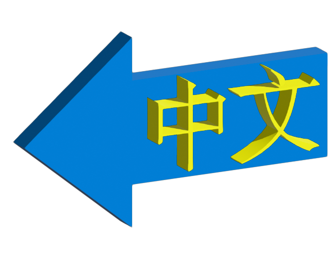

<!-- sidebar.html: original desktop navigation + compact mobile drawer -->
<button id="sidebar-menu-toggle" class="sidebar-menu-toggle"
        type="button" aria-controls="sidebar" aria-expanded="false"
        aria-label="Open menu">
  <span></span><span></span><span></span>
  <small>MENU</small>
</button>

<nav id="sidebar">
  <div class="sidebar-scroll-content">
    <a href="index.html" class="sidebar-home">
      
    </a>

    <div style="height: 1.2rem; flex-shrink: 0;"></div>
    <a href="aboutMe.html" data-zh="[关于我]" data-en="[ABOUT ME]">[关于我]</a>
    <div style="height: 1.2rem; flex-shrink: 0;"></div>

    <div class="sidebar-section-title"
         data-zh="个人创作" data-en="PERSONAL WORKS">个人创作</div>

    <a href="WorkGrave.html" data-zh="终于我能感觉到雨了" data-en="finally I could feel the rain">终于我能感觉到雨了</a>
    <a href="WorkMetroLove.html" data-zh="MetroLove™:Beta 1.0" data-en="MetroLove™:Beta 1.0">MetroLove™ : Beta 1.0</a>
    <a href="WorkFalling.html" data-zh="坠入层层叠叠" data-en="Falling into Layers (and Layers)">坠入层层叠叠</a>
    <a href="WorkNeoRenaissance.html" data-zh="新文艺复兴" data-en="Neo-Renaissance">新文艺复兴</a>
    <a href="WorkPDF.html" data-zh="PDF to Page" data-en="PDF to Page">PDF to Page</a>
    <a href="WorkNaturalTheater.html" data-zh="自然剧场" data-en="Natural Theater">自然剧场</a>
    <a href="WorkEmoji.html" data-zh="EMO机" data-en="EMOji">EMO机</a>

    <div style="height: 1.2rem; flex-shrink: 0;"></div>
    <div class="sidebar-section-title"
         data-zh="委托制作" data-en="COMMISSIONS">委托制作</div>

    <a href="Metamorphosis.html" data-zh="变形记" data-en="Metamorphosis">Metamorphosis</a>
    <a href="Youth.html" data-zh="青春绽放" data-en="Blossom of Youth">Blossom of Youth</a>
    <a href="1960.html" data-zh="个人计算机与反文化" data-en="Personal Computers and Counterculture">Back to the 1960s</a>
    <a href="WorldTree.html" data-zh="世界树" data-en="World Tree">World Tree</a>
    <a href="Shenzhen.html" data-zh="深圳:世界工厂" data-en="Shenzhen:World Factory">Shenzhen:World Factory</a>
    <a href="Dialogue.html" data-zh="隔空对话" data-en="Dialogue Across Time">Dialogue Across Time</a>
  </div>

  <div style="height: 1.2rem; flex-shrink: 0;"></div>
  <div class="sidebar-language-footer">
    <button id="sidebar-language-toggle" class="lang-btn" type="button"
            data-lang="zh" aria-label="Switch to Chinese">
      
    </button>
  </div>
</nav>
